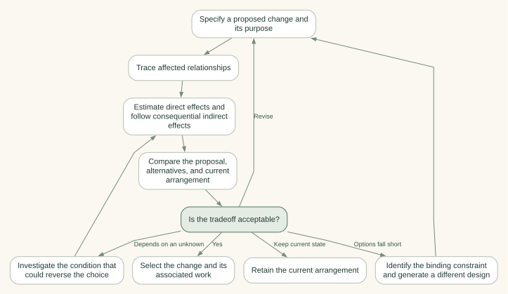

An attached garage — seeing what a decision reaches
You want to move the garage door a few feet so it’s easier to pull in from the street. That shifts the driveway approach and changes where the framing carries the load. When Aura Pro brings the proposed opening together with the site survey, the designer sees that the new threshold would sit where runoff collects. The designer accepts the survey as settling where runoff collects and reports what moving the door would require. If the owner asked for the consequences, the owner can accept that answer and close the assessment. If the owner asked for a recommendation, the designer still owes a comparison and a recommendation. With the tradeoffs understood, the owner can keep the opening or ask the designer for another layout. If a missing elevation could change the drainage conclusion, the designer first asks for that measurement.
The question
Starting condition. A change is proposed within an existing system. Its intended benefit is understood, but the effects elsewhere are uncertain. Central question. If we change this, what else changes?
Decision path


Output. A design choice grounded in foreseeable consequences. Understanding those consequences can itself fulfill the request.